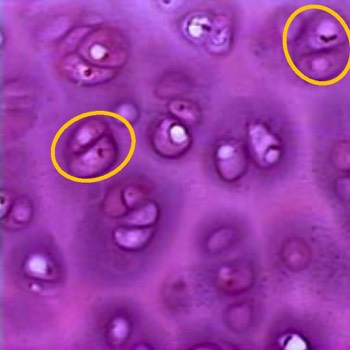

a. Hyalien kraakbeen
Hyalien kraakbeen is het meest voorkomende kraakbeentype in het lichaam, en is o.a. te vinden als tijdelijk skelet tijdens de embryonale ontwikkeling, als kraakbeenringen die de luchtwegen steunen en als gewrichtskraakbeen.
‘hyalien’ (hyalos= glas) betekent glasachtig. Macroscopisch heeft dit kraakbeen namelijk een bleek, egaal, half-doorschijnend, glanzend uitzicht.
De matrix van hyalien kraakbeen is licht basofiel en bevat voornamelijk collageen type II vezels. Dit zijn dunne vezels met dezelfde brekingsindex als de grondsubstantie zodat ze onder een lichtmicroscoop niet zichtbaar zijn. De matrix ziet er egaal uit.
Chondroblasten liggen perifeer tegen het perichondrium, chondrocyten liggen meer centraal in isogene groepjes met 2 of 4 cellen.
Hyalien kraakbeen is het meest voorkomende kraakbeentype in het lichaam, en is o.a. te vinden als tijdelijk skelet tijdens de embryonale ontwikkeling, als kraakbeenringen die de luchtwegen steunen en als gewrichtskraakbeen.
‘hyalien’ (hyalos= glas) betekent glasachtig. Macroscopisch heeft dit kraakbeen namelijk een bleek, egaal, half-doorschijnend, glanzend uitzicht.
De matrix van hyalien kraakbeen is licht basofiel en bevat voornamelijk collageen type II vezels. Dit zijn dunne vezels met dezelfde brekingsindex als de grondsubstantie zodat ze onder een lichtmicroscoop niet zichtbaar zijn. De matrix ziet er egaal uit.
Chondroblasten liggen perifeer tegen het perichondrium, chondrocyten liggen meer centraal in isogene groepjes met 2 of 4 cellen.

Bij hyalien kraakbeen liggen de chondrocyten zeer dicht bij elkaar in isogene groepen (oranje omcirkeld). Merk op dat de cellen in deze groepjes geen specifieke oriëntatie vertonen. In de matrix kan je de collageenvezels niet zien liggen.
Vordering zelfstudie kraakbeen: